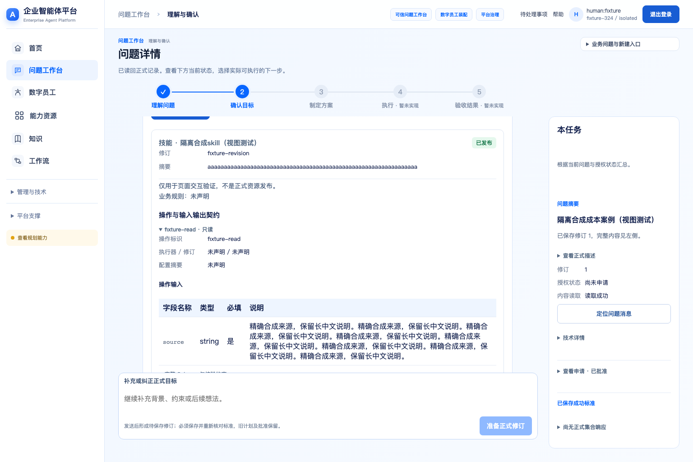
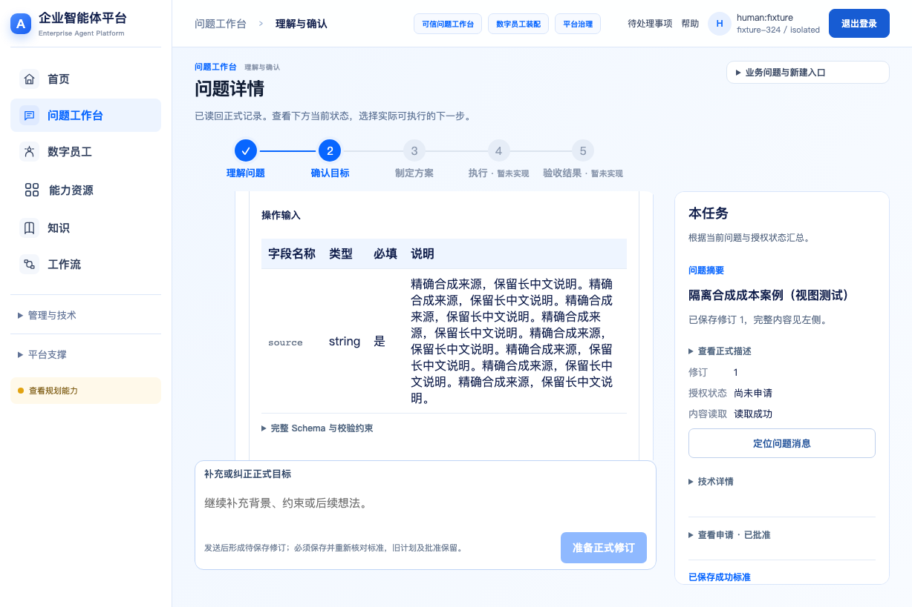
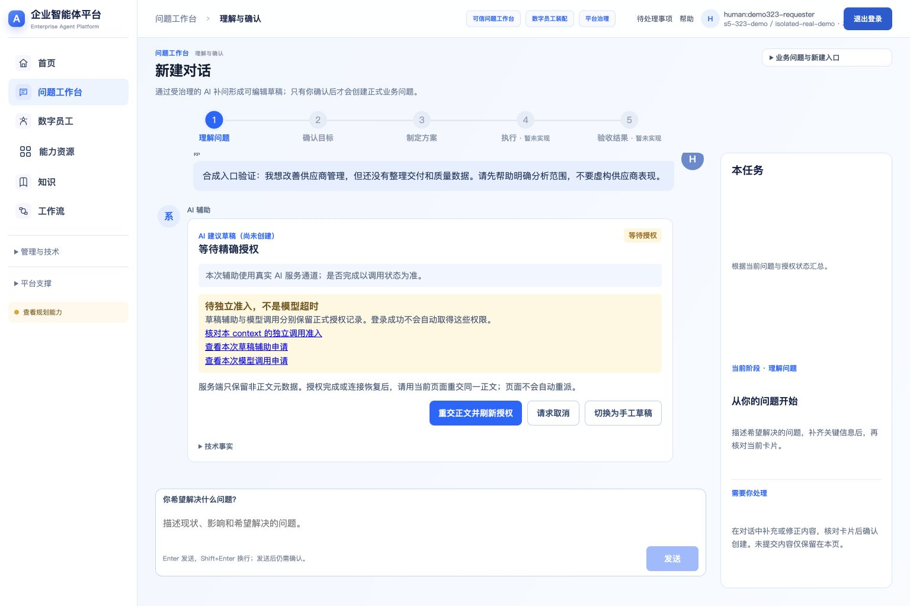
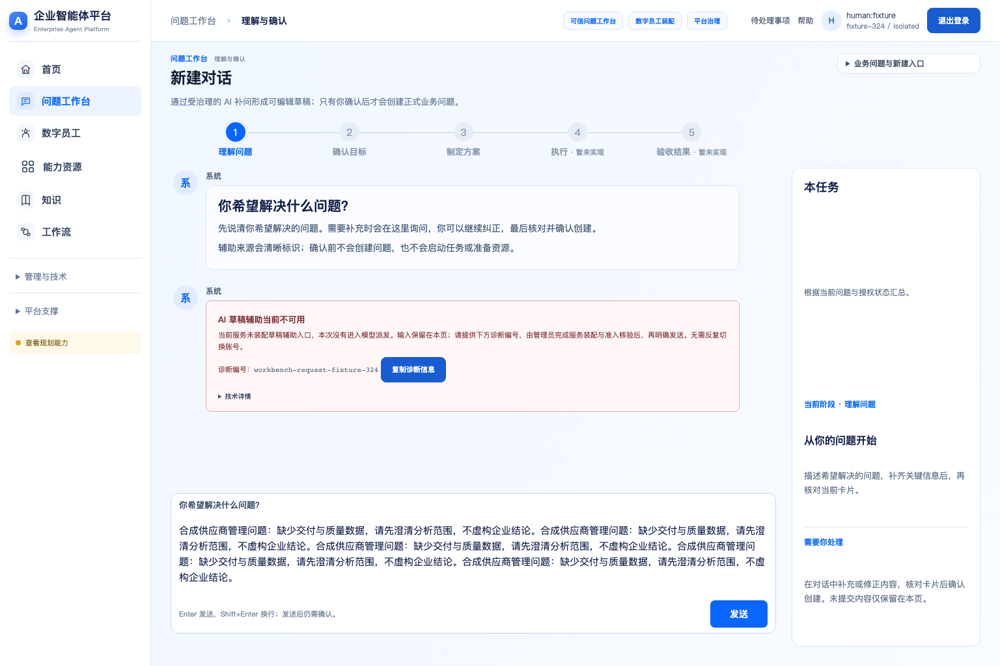
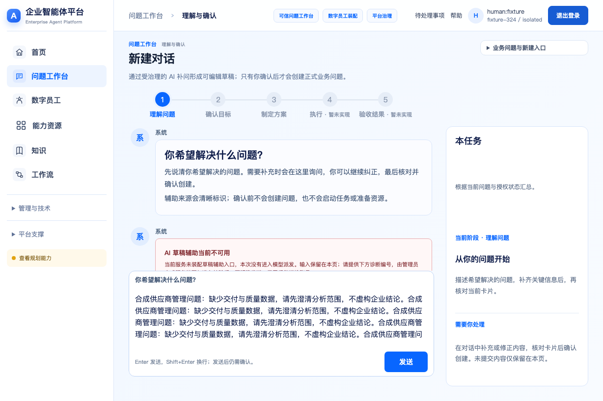
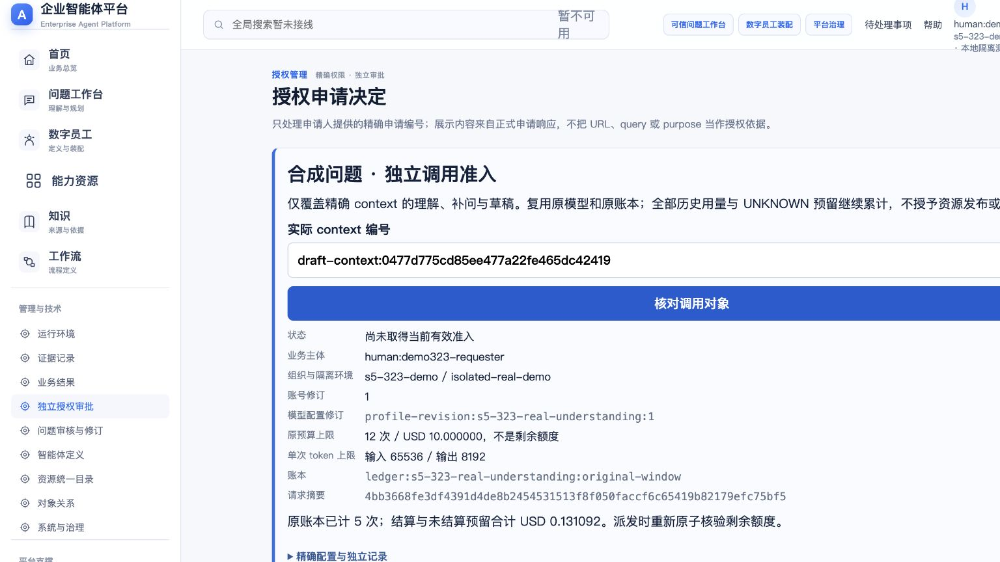

P06 对话布局参考

资源审核实现 · 1536×1024

S04 字段表参考

125% 等效布局视口 1228×819

最新完整包 R35，业务图与 R30 字节相同。右侧是明确标注的浏览器视图 fixture，不是实际资源发布或 Native 执行证据。实际权限前置仍待 Human。两侧原始画布均 1536×1024；点击图片可查看原尺寸。


已处理：只读契约字段表、原文展开、状态徽标、长中文换行及输入区常驻。未完成：完整独立详情页导航/Tab/右栏与实际授权后逐页视觉验收；本页不宣布视觉通过。当前仍是对话内集中审核，没有实现所有资源工作台页面。





专用独立准入效果图缺项，不以登录失效 IAM03 冒充。页面已读回实际 context/主体/账号修订/原预算，业务主体不能自签。整体导航、右栏、卡片布局与参考仍有差异，视觉接受 NOT_GRANTED；以上均不是模型已派发或 Native 执行成功证据。